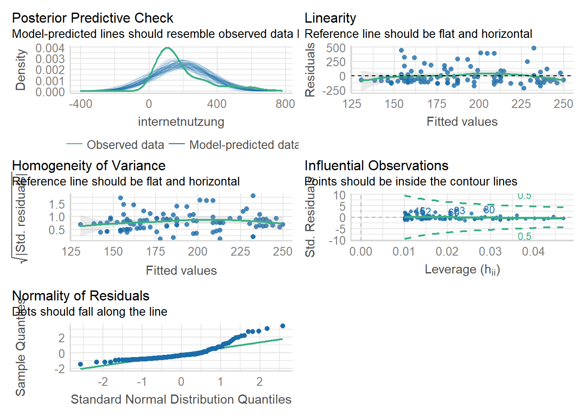

Prüfung der Voraussetzungen bei der linearen Regression
Author
Stephanie Geise
Das Testen der Maschine, Bild generiert von Midjourney
In diesem Teilkapitel gehen wir (wie angekündigt) näher auf die Prüfung der Voraussetzungen einer Regressionsanalyse ein. Im folgenden Teilkapitel lernen wir dann die multiple lineare Regression kennen, die es erlaubt, Zusammenhänge zwischen mehreren x-Variablen und einer y-Variablen zu analysieren.
1 Data Management
Zunächst laden wir wieder die Pakete des tidyverse und das Pakete broom, um die normale Ausgabe der Funktion lm (für die Berechnung linearer Modelle) in ein etwas anschaulicheres Format umwandeln zu können. Außerdem laden wir das Paket performance, dass wir für die Voraussetzungsprüfung brauchen, sowie die Pakete lmtest und sandwich, mit der wir fehlende Voraussetzungen korrigieren können (siehe unten).
model <-lm(TV_Konsum ~ Alter, data = daten) summary(model)summary(lm.beta(model))
1
klassischer Output mit relevanten Kennzahlen
2
klassischer Output mit relevanten Kennzahlen erweitert um standardisierte beta-Koeffizienten
Call:
lm(formula = TV_Konsum ~ Alter, data = daten)
Residuals:
Min 1Q Median 3Q Max
-242.61 -67.44 -22.09 35.02 1292.03
Coefficients:
Estimate Std. Error t value Pr(>|t|)
(Intercept) 64.6438 5.6890 11.36 <0.0000000000000002 ***
Alter 2.1928 0.1007 21.77 <0.0000000000000002 ***
---
Signif. codes: 0 '***' 0.001 '**' 0.01 '*' 0.05 '.' 0.1 ' ' 1
Residual standard error: 122.5 on 4927 degrees of freedom
Multiple R-squared: 0.08778, Adjusted R-squared: 0.0876
F-statistic: 474.1 on 1 and 4927 DF, p-value: < 0.00000000000000022
Call:
lm(formula = TV_Konsum ~ Alter, data = daten)
Residuals:
Min 1Q Median 3Q Max
-242.61 -67.44 -22.09 35.02 1292.03
Coefficients:
Estimate Standardized Std. Error t value Pr(>|t|)
(Intercept) 64.6438 NA 5.6890 11.36 <0.0000000000000002 ***
Alter 2.1928 0.2963 0.1007 21.77 <0.0000000000000002 ***
---
Signif. codes: 0 '***' 0.001 '**' 0.01 '*' 0.05 '.' 0.1 ' ' 1
Residual standard error: 122.5 on 4927 degrees of freedom
Multiple R-squared: 0.08778, Adjusted R-squared: 0.0876
F-statistic: 474.1 on 1 and 4927 DF, p-value: < 0.00000000000000022
Mit diesem Regressionsmodell haben wir übeprüft, ob das Alter die Fernsehnutzung erklären kann. Im Output sehen wir, dass das Alter einen signifikanten positiven Einfluss auf die Internetnutzung. Je älter eine Person ist, desto mehr nutzt er/sie das Fernsehen. Die Regressionsanalyse lässt dabei auch eine Quantifizierung dieses Zusammenhangs zu: Mit jeder Einheit, in der die unabhängige Variable Alter steigt (hier: mit jedem Jahr Alter), nimmt die unabhängige Variable TV-Nutzung um “den Estimate-Wert” in Messeinheiten (hier: -2.19 Minuten) zu. Dieser Zusammenhang ist mit p >.05 statistisch signifikant.
Soweit die Wiederholung. Beginnen wir nun mit der Prüfung der Voraussetzungen einer Regressionsanalyse. Vielleicht wundern ihr euch, warum wir die Voraussetzungen erst im zweiten Schritt prüfen? Da habt ihr Recht: Eigentlich müssten wir erst die Voraussetzungen prüfen, dann erst das Modell schätzen. Wenn wir unser Modell aber schon geschätzt haben, können wir Funktionen zur Prüfung der Voraussetzungen auf unser gesamtes Modell anwenden (bzw. auf das entsprechende Datenobjekt “model”) - und das erspart uns eine Menge “Handarbeit” mit vielen kleinen Zwischenschritten. Zum Beispiel müssten wir für die Prüfung der Voraussetzungen, die die Residuen betreffen, diese erst einmal berechnen und in einer neuen Variable abspeichern. Es ist also weniger Aufwand, die Voraussetzungen ex post zu prüfen.
2 Voraussetzungsprüfung der linearen Regression
Bevor wir zum statistischen Teil kommen, wollen wir noch einmal Revue passieren lassen, was die wichtigsten Voraussetzungen der einfachen linearen Regression sind:
(quasi-)metrisches Skalenniveau
Linearität des Zusammenhangs zwischen x und y
Homoskedastizität der Residuen: Varianzen der Residuen der prognostizierten abhängigen Variablen sind gleich - Unabhängigkeit der Residuen: ansonsten Autokorrelation, die Aussagekraft reduziert
Normalverteilung der Residuen
Keine Ausreißer in den Daten, da schon einzelne Ausreißer einen sonst signifikanten Trend zunichte machen können (ggf. also eliminieren)
2.1 Metrisches Skalenniveau & Linearität des Zusammenhangs
Ob 1.) die Variablen, die wir in das Regressionsmodell einbeziehen wollen (Alter, Internet-Nutzung) metrisch sind, und ob 2.) ein linearer Zusammenhang besteht, haben wir in dem letzten Skript bereits überprüft. Für die Prüfung nach der Linearität des Zusammenhangs zwischen x und y hatten wir ein Streudiagramm mit der geschätzten Regressionsgeraden erzeugt. Hier könnt ihr noch einmal nachschauen, wie das geht.
2.2 Homoskedastizität der Residuen
Lineare Modelle setzen eine konstante Fehlervarianz (Homoskedastizität) voraus. Eine weitere Bedingung der Regressionanalyse ist also, dass die Varianzen der Residuen der prognostizierten abhängigen Variablen für alle Werte des Prädiktors gleich sind, so dass das Modell gleich gute Vorhersagen über alle Werte machen kann. Liegt Homoskedastizität vor, sind die Abweichungen der vorhergesagten Werte von den gemessenen Werten konstant gleich groß - unabhängig davon, wie hoch oder niedrig der Wert des Prädiktors ist. Das ist eine wichtige Voraussetzung, denn das Gegenteil - Heterokedastizität der Residuen - würde zur Ineffizienz unserer Schätzung führen! Denn die Standardfehler der Regressionskoeffizienten werden bei vorhandener Heteroskedastizität nach oben verzerrt geschätzt. Das Ergebnis wäre, dass unser Regressionsmodell mit seiner Vorhersage systematisch umso weiter daneben liegt, je größer der Prädiktorwert ist, für den wir die abhängige Variable schätzen wollen.
Das klingt kompliziert? Kann sein, aber keine Panik: Mit der Funktionen check_heteroscedasticity() aus dem performance-Package können wir sehr einfach prüfen, ob diese Annahme verletzt wurde. Wir müssen diese Funktion lediglich auf unser geschätzes Regressionsmodell anwenden:
Die Interpretation des Outputs ist einfach, weil R hier uns eine sehr konkrete Aussage zur Überpüfung der Annahme macht: Bei grüner Schrift ist das Ergebnis in Ordnung, d.h. die Fehlervarianz scheint homoskedastisch, denn p wäre dann nicht signifikant. Bei roter Schrift - wie im vorliegenden Fall - ist die Fehlervarianz heteroskedastisch und p ist signifikant (p < 0.05). Dann liegt unser Regressionsmodell mit seiner Vorhersage systematisch umso weiter daneben, je größer der Prädiktorwert ist, für den wir die abhängige Variable schätzen wollen. Das müssen wir dann bei der Interpretation der Daten berücksichtigen. Es ist dann auch unbedingt geboten, diese Limitation anzugeben.
Wie das ganze aussieht, können wir uns auch grafisch über die plot()-Funktion anschauen. Dazu erzeugen wir ein Streudiagramm, das die vorhergesagten Werte und die Residuen enthält:
plot(model, 1)

plot(fitted.values(model), rstandard(model))
Zunächst betrachten wir die Streuung der Punkte im Streudiagramm ohne Linie. Hier können wir bereits sehen, dass eine Zunahme der Streuung bei mittleren Werten erkennbar ist, weil wir einen leicht zur Mitte geöffneten Trichter haben. Das zweite Diagramm hilft zusätzlich mit einer roten Linie, die bei Homoskedastizität möglichst gerade wird. Ist sie wellig oder hat sie eine positive oder negative Steigung, können wir von Heteroskedastizität ausgehen. Genauere Auskunft gibt aber der oben gerechnete Test!
Im Beispiel sehen wir aber auch, dass die Abweichung bei uns zwar vorhanden, aber nicht allzu “dramatisch” ist. Die Voraussetzung ist zwar verletzt, und das müssen wir auch berücksichtgen, aber die Regressionsanalyse ist sehr robust gegen die Verletzung ihrer Voraussetzungen. Wir können den Fehler zudem korrigieren! Und das werden wir nun auch tun :)
2.2.1 Was tun bei Heteroskedastizität der Residuen? Berechnung von HC-Standard Errors!
Liegt Heteroskedastizität vor, müssen wir nicht verzweifeln: Erstens ist die Regressionsanalyse sehr robust gegen die Verletzung ihrer Voraussetzungen. Zweitens können wir diesen Konflikt einigermaßen elegant auflösen, indem wir pauschal robuste Standardfehler schätzen lassen, so dass die Verletzung nicht mehr zu Schätzfehlern führt. In R gibt es (wie immer) verschiedene Wege Heteroskedastizität zu kontern. Eine einfache Lösung bietet das lmtest-Paket mit der coeftest-Funktion in Kombination mit dem Befehl vcov(), der zur Berechnung von heteroscedasticity consistent (HC) standard errors führt. So ermöglichen wir die Berechnung von heteroskedastizitätskonsistenten bzw. heteroskedastizitätsrobusten Schätzern. Nutzen wir diese Lösung, werden die Standardfehler nicht mehr verzerrt und damit auch nicht die t-Werte und p-Werte unserer Schätzung.
PS: Zur Berechnung von heteroscedasticity consistent (HC) standard errors gibt es verschiedene HC-Funktionen. Hier nutzen wir zunächst Typ 3, die auch Hayes & Cai (2007) empfehlen. HC4 (die zweite Variante) ist dann sinnvoll, wenn die Residuen nicht normalverteilt sind. (Wie wir später sehen werden, ist das bei uns leider auch der Fall)
coeftest(model, vcov =vcovHC(model, type ="HC3"))
t test of coefficients:
Estimate Std. Error t value Pr(>|t|)
(Intercept) 64.64384 5.29202 12.215 < 0.00000000000000022 ***
Alter 2.19279 0.10197 21.504 < 0.00000000000000022 ***
---
Signif. codes: 0 '***' 0.001 '**' 0.01 '*' 0.05 '.' 0.1 ' ' 1
# diese Variante wählen, wenn Residuen nicht normalverteilt sind #coeftest(model, vcov = vcovHC(model, type = "HC4"))
Nach der Ausführung erhalten wir eine neue Regressionstabelle. Wenn wir diese Tabelle mit dem obigen Output unseres Regressionsmodells abgleichen, sehen wir, dass sich die eigentlichen Koeffizienten (Estimates) nicht verändert haben - aber alle Werte, die rechts davon stehen, also Standardfehler (Std. Error), t-Werte und p-Werte. Diese sind nun um unsere Schätzfehler durch Heteroskedastizität korrigiert.
Also weiter geht’s!
2.3 Unabhängigkeit der Residuen
Auch die Annahme, dass die Residuen unabhängig voneinander sind, ist eine wichtige Voraussetzung der Regressionsanalyse. Unabhängigkeit der Residuen bedeutet inhaltlich: Wenn ich den Fehlerterm für eine bestimmte Beobachtung kenne, darf mir das keine Information über den Fehlerterm für die nächste Beobachtung liefern. Es darf also nichts systematisch zu einer Verzerrung meiner Beobachtungen (bzw. meiner Fehlerterme) führen. Ansonsten läge eine Autokorrelation der Fehlerterme vor, die die Aussagekraft des Modells reduzieren würde.
Das performance-package ist einfach soooo cool! Es beinhaltet auch die check_autocorrelation()-Funktion, mit der wir diese Annahme sehr einfach prüfen können:
check_autocorrelation(model)
OK: Residuals appear to be independent and not autocorrelated (p = 0.570).
Auch hier ist der Output wieder sehr klar: Die Prüfung ergibt, dass die Residuen unabhängig und nicht autokorreliert sind (p = 0.588) - sonst hätten wir auch hier einen signifikanten p-Wert erhalten. Prima!
2.4 Normalverteilung der Residuen
Wenn die Residuuen nicht der Normalverteilungskurve folgen, sondern stattdessen eigene “Muster” in ihrer Verteilung aufweisen, kann dies darauf hindeuten, dass wir nicht alle Prädiktoren im Modell berücksichtigt haben und somit ein Teil der erklärenden Information in die Residuen übergeht, wo sie das erkennbare Muster “verursacht”.
Auch die Voraussetzung, dass die Residuen normalverteilt sein sollen, lässt sich mit einer Funktion aus dem performance-Package sehr einfach überprüfen:
check_normality(model)
Warning: Non-normality of residuals detected (p < .001).
Auch hier ist das Ergebnis ohne Probleme zu interpretieren, weil R hier eine “direkte Ansage” macht. In unserem Fall ist die Voraussetzung der Normalverteilung verletzt, weil p signifikant wird. Das müssen wir bei der Interpretation der Daten berücksichtigen. Grundsätzlich können wir hier wieder darauf verweisen, dass die Regressionsanalyse robust gegen die Verletzung ihrer Voraussetzungen ist. Eine Alternative ist, dass wir ein Bootstrapping-Verfahren auf unsere Daten anwenden. Das aber nur zur Info, wenn ihr hier selbstständig weitermachen wollt - das würde jetzt etwas zu weit führen :) Außerdem werden wir unten bei der zusätzlichen visuellen Inspektion mit der Funktion check_models() auch noch sehen, dass unsere Annahme nicht allzu schlimm verletzt ist.
2.5 Ausreißer im Modell
Ausreißer in den Daten sind ein Problem für viele parametrische Verfahren, denn einzelne Ausreißer können einen sonst signifikanten Trend zunichte machen (ggf. also eliminieren). Ob es in unserem Modell Ausreißer gibt, können wir wieder mit einer sehr einfachen Funktion aus dem performance-Package prüfen, die auf das sogenannte “cooks distance” zurückgreift. Der Wert gibt mir Auskunft darüber, welchen Einfluss mögliche Ausreißer auf das Modell haben.
check_outliers(model)
OK: No outliers detected.
- Based on the following method and threshold: cook (0.7).
- For variable: (Whole model)
In unserem Fall gibt es keine Ausreißer, die das Modell beinträchtigen - vielleicht hätten wir sonst auch keinen signifikanten Zusammenhang beobachten können.
Exkurs Visuelle Inspektion der Modellgüte bzw. der Modellannahmen
Es gibt im performance-Package auch eine sehr gehaltvolle Funktion, die uns eine visuelle Inspektion der Modellgüte bzw. verschiedenen Modellannahmen erlaubt (Normalität der Residuen, Normalität der zufälligen Effekte, lineare Beziehung, Homogenität der Varianz, Multikollinearität). Mit der check_model-Funktion können wir uns dazu mehrere Grafiken im Überblick ausgeben lassen. YEAH! :)
Hier der Link zur Dokumentation des Performance-Packages mit weiteren Informationen: Link
#check_model(model)#model_performance(model)
Literatur
📖 Hayes, A. F.,& & Cai, L. (2007). Using heteroskedasticity-consistent standard error estimators in OLS regression: An introduction and software implementation. Behavior research methods, 39(4), 709-722